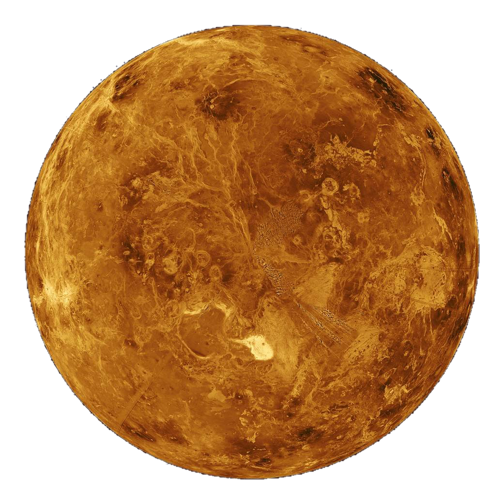

venus

Venus regula el mundo del amor y los deseos, la lujuria, la expresión artística y los placeres de la vida. Representa uno de los impulsos más básicos de la humanidad: la necesidad de relacionarse.
Venus es sinónimo de relaciones, encuentros, aceptación. Por lo tanto, en la carta astral, este planeta indica, por un lado, el potencial de afinidad e de intimidad con los demás y, por los demás, la capacidad de la persona de relacionarse consigo misma.
Venus representa el potencial de autoestima y nos recuerda que aquellos que no se estiman a sí mismos no pueden mantener una relación saludable con los demás. Quien no se quiere a sí mismo no puede recibir ni dar afecto, ni establecer intimidad.
Ya sea en el hombre o en la mujer, la posición de Venus en la carta representa la sensualidad, la capacidad de dar y sentir placer. Representa la personalidad erótica, el objeto del deseo y cómo llega a ser el objeto del deseo. Es la atracción, el aspecto físico, la atracción física, la necesidad de satisfacer los deseos más íntimos.